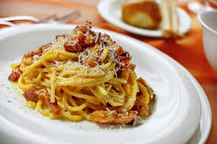

Carbonara

Description: Carbonara is the simplest yet
one of the most delicious dishes Italy as brought to life.
This icon of the italian cousine consists on a pasta base
(usually, spaghetti or penne), a creamy sauce made with
egg yolks, parmiggiano cheese and pecorino cheese, decorated
with crispy dices of guanciale.
Ingredients
- 400g of spaghetti or large diameter penne
- 200g of guanciale
- 4 egg yolks
- 70g parmiggiano reggiano
- 40g pecorino romano
- black pepper
Steps
- Fill a large pot with lightly salted water and
bring to a rolling boil. Stir in pasta and
return to a boil. Cook pasta uncovered, stirring
occasionally, until tender yet firm to the bite,
about 12 minutes. Reserve a little pasta water, then
drain.
- Meanwhile, heat a skillet over medium heat; add
diced guanciale, cook and stir until crisp, 5 to 10
minutes.
- Whisk the egg yolks in a bowl together with the grated
cheeses and ground black pepper to taste. Add pasta
water until mixture is creamy.
- Stir in the crispy guanciale, add the pasta and
the egg and cheese cream, and toss until evenly coated.
Home